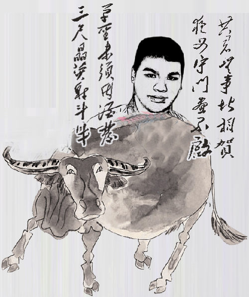
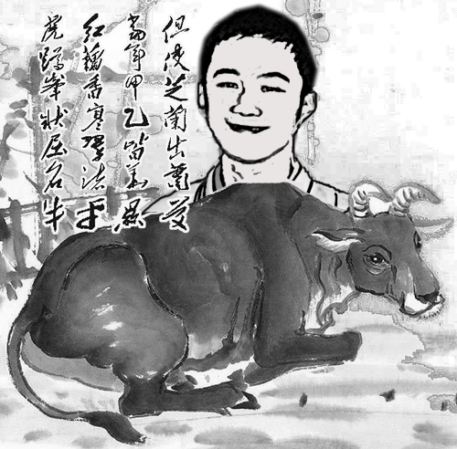
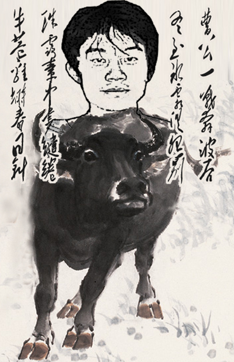
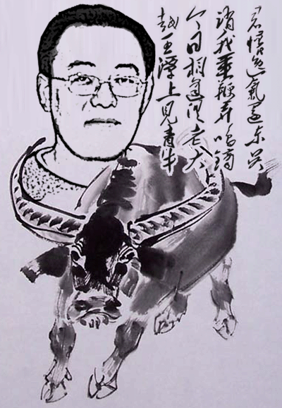
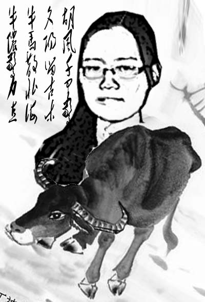
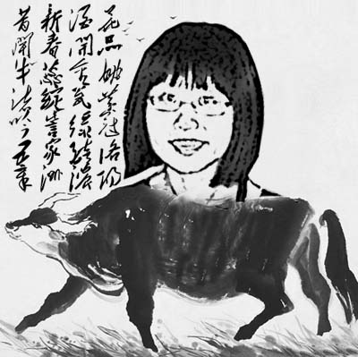
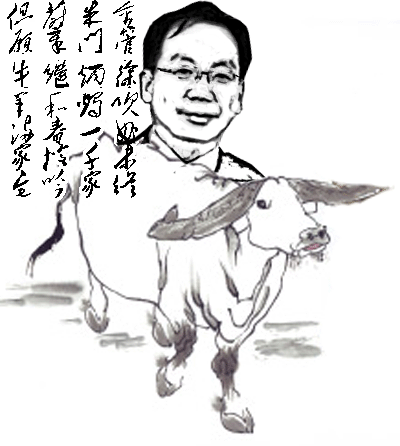
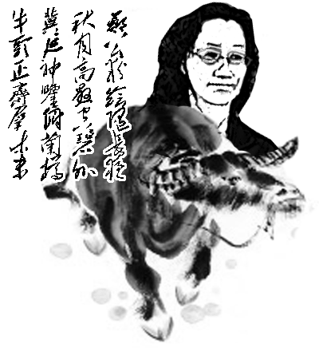
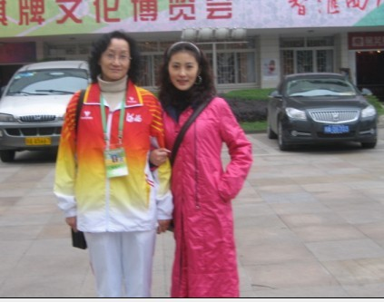
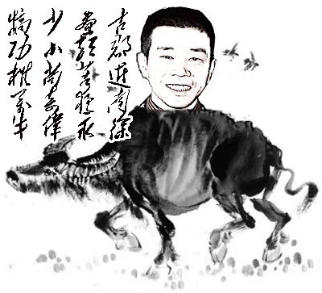

2009年中国五子棋的牛人们（图谱）
#1 2009年中国五子棋的牛人们（图谱） 作者：茗弈宽容 发表时间：2010-1-7 18:53:19
牛人之一：贺启发
2009年全国五子棋团体锦标赛冠军阵容，首届全国智力运动会五子棋男子个人金牌获得者、首届全国智力运动会五子棋混合团体金牌阵容。
共君无事堪相贺，
夜叉守门昼不启；
草圣未须因酒发，
三尺晶荧射斗牛。

牛人之二：艾显平
2009年全国五子棋个人锦标赛冠军。
但使芝兰出萧艾，
当年甲乙皆华显；
红藕香寒翠渚平，
虎蹲峰状屈名牛。

牛人之三：汪清清
09全国青少年锦标赛女子少年第一名，09首届全国智运会女子第一名。
汪汪积水光连空，
清如冰雪重如山；
清风袅袅越水陂，
牛夸棋品无勍敌。
［ 忧郁的双眼 于 2010-1-7 20:25:07 时花20金币送鲜花一朵］
［ 失落刀 于 2010-1-8 7:57:21 时奖励此帖[金币加 20 威望加1］
［ 逆刃 于 2010-1-8 13:52:46 时花20金币送鲜花一朵］
［此帖子已被 茗弈小刀 在 2010-1-13 15:29:00 编辑过］
#2 Re:2009年中国五子棋的三大牛人（图谱） 作者：歇菜了 发表时间：2010-1-7 19:12:39
 太有才了
太有才了
#3 Re:2009年中国五子棋的三大牛人（图谱） 作者：炫飞冰弦 发表时间：2010-1-7 19:15:11
很形象很强大
#4 Re:2009年中国五子棋的三大牛人（图谱） 作者：歇菜了 发表时间：2010-1-7 19:48:52
太有才了
#5 Re:2009年中国五子棋的三大牛人（图谱） 作者：黄药师 发表时间：2010-1-7 19:53:32
这个谁画的啊，太厉害了！#6 Re:2009年中国五子棋的三大牛人（图谱） 作者：忧郁的双眼 发表时间：2010-1-7 20:24:32
奖励哇
好图
尤其是三落的
#7 Re:2009年中国五子棋的三大牛人（图谱） 作者：茗弈宽容 发表时间：2010-1-7 22:24:38
补充下，图一和图二的文字是铁良老师写的，图三文字是“还不上”这位朋友写的。#8 Re:2009年中国五子棋的三大牛人（图谱） 作者：aabb 发表时间：2010-1-7 22:44:41
#9 Re:2009年中国五子棋的三大牛人（图谱） 作者：无聊鬼大叔 发表时间：2010-1-8 4:07:45
不错不错！楼主也牛！
#10 Re:2009年中国五子棋的三大牛人（图谱） 作者：裁决殿雪月 发表时间：2010-1-8 8:28:36
是用PS的吧 不过很赞
#11 Re:2009年中国五子棋的三大牛人（图谱） 作者：水月 发表时间：2010-1-8 9:14:42
不得不说画得很难看而且很无厘头［ 嗯嗯嗯 于 2010-1-8 15:35:46 时花50金币砸了你一个臭鸡蛋］
#12 Re:2009年中国五子棋的三大牛人（图谱） 作者：星月思过 发表时间：2010-1-8 22:46:13
增加一个：
唯有你创作
牛人之四：霍九旭
09全国五子棋锦标赛女子第一名
霍镇迎云罕
九龙蟠焰动
旭日悬清景
牛羊平野外

［此帖子已被 星月思过 在 2010-1-8 22:47:31 编辑过］
#13 Re:2009年中国五子棋的三大牛人（图谱） 作者：瞻彼淇奥 发表时间：2010-1-8 22:47:32
轻浮画人难画骨，寂寞读诗谁读情？
游鱼若解流云意，风清水碧笑逐萍。
戏题图鉴
#14 Re:2009年中国五子棋的三大牛人（图谱） 作者：星月思过 发表时间：2010-1-9 11:24:46
唯有你创作
牛人之五：周可鼎
09上海名人邀请赛冠军
四象分明八卦周
朝光如飞犹尚可
洪炉任铸千钧鼎
天马跂足随牦牛

#15 Re:2009年中国五子棋的三大牛人（图谱） 作者：茗弈宽容 发表时间：2010-1-9 19:27:37
 谁砸我宝贝鸡蛋？
谁砸我宝贝鸡蛋？
#16 Re:2009年中国五子棋的三大牛人（图谱） 作者：茗弈无悔 发表时间：2010-1-10 13:21:40
了不起,向牛人们学习致敬
#17 Re:2009年中国五子棋的三大牛人（图谱） 作者：星月思过 发表时间：2010-1-10 22:04:23
唯有你创作
牛人之六：戴晓涵
09浙江公开赛第一名
戴胜下时桑田绿
晓露湿秋禾黍香
涵胡画角怨边草
牛渚翠梁横浅清

#18 Re:2009年中国五子棋的三大牛人（图谱） 作者：傀儡 发表时间：2010-1-10 23:52:33
都很有才
#19 Re:2009年中国五子棋的三大牛人（图谱） 作者：心上人 发表时间：2010-1-11 8:18:58
是好牛啊！！！！！！！！！
#20 Re:Re:2009年中国五子棋的三大牛人（图谱） 作者：茗弈宽容 发表时间：2010-1-12 12:10:37
2009中国五子棋牛人之七
取次花丛懒回顾
天风微微夕露炜
独入玄宫礼至真
剑气徒劳望斗牛
上海棋王
［此帖子已被 茗弈宽容 在 2010-1-12 12:11:32 编辑过］
#21 Re:2009年中国五子棋的三大牛人（图谱） 作者：茗弈宽容 发表时间：2010-1-12 12:12:36
这张脸型稍宽了点
#22 Re:Re:2009年中国五子棋的三大牛人（图谱） 作者：茗弈宽容 发表时间：2010-1-12 12:13:55
2009中国五子棋牛人之八
李白乘舟将欲行
一条街擘两行蝉
京江风静喜乘流
牛壮日耕十亩地
李一智运北京选拔赛第一名，第二届京系杯第一名
#23 Re:Re:Re:2009年中国五子棋的三大牛人（图谱） 作者：茗弈宽容 发表时间：2010-1-13 15:27:25
2009中国五子棋牛人之九

|
|
||
（转自中国连珠） |
#24 Re:Re:2009年中国五子棋的三大牛人（图谱） 作者：茗弈宽容 发表时间：2010-1-15 11:34:18
2009中国五子棋牛人之十

|
|
||
|
|
#25 Re:2009年中国五子棋的牛人们（图谱） 作者：越狱行辕 发表时间：2010-1-15 12:43:05
楼上 世锦赛冠军#26 Re:Re:2009年中国五子棋的牛人们（图谱） 作者：茗弈宽容 发表时间：2010-1-16 17:58:28
2009中国五子棋牛人之十一

胡风千里惊
夕阳留古木
牛马散北海
牛侬惊力直
胡夕第11届世界连珠锦标赛女子第三名，首届全国智运会五子棋比赛女子第二名，第三届全国五子棋团体锦标赛最佳四台
#27 Re:2009年中国五子棋的牛人们（图谱） 作者：忧郁的双眼 发表时间：2010-1-16 18:35:33
吴镝老象了
妈呀楼主老有才了
#28 Re:Re:2009年中国五子棋的牛人们（图谱） 作者：茗弈宽容 发表时间：2010-1-17 21:41:35
2009中国五子棋牛人之十二

花品姚黄冠洛阳
酒开金瓮绿醅浓
新春蕊绽訾家洲
昔闻牛渚吟五章
姚金蕊第11届世界连珠锦标赛女子第二名，首届全国智运会五子棋女子第五名。
#29 Re:Re:Re:2009年中国五子棋的牛人们（图谱） 作者：茗弈宽容 发表时间：2010-1-18 13:03:05
2009中国五子棋牛人之十三

|
||
|
|
#30 Re:2009年中国五子棋的牛人们（图谱） 作者：茗弈宽容 发表时间：2010-1-18 13:05:13
空谷清幽闻琴声
山外高人似女神
新生翠竹郁葱葱
雨后出谷何处问？
（大致含义是误入山谷中听到琴声，并未见其人，但感觉弹琴的世外高人是女子，谷中景色也很美，竹子郁郁葱葱，下起了雨，雨后想出谷却找不到来时的路了。）
#31 Re:2009年中国五子棋的牛人们（图谱） 作者：周光乐 发表时间：2010-1-18 13:55:09
很好！！！
#32 Re:2009年中国五子棋的牛人们（图谱） 作者：叶昀 发表时间：2010-1-18 22:59:07
 顶下
顶下
#33 Re:Re:2009年中国五子棋的牛人们（图谱） 作者：茗弈宽容 发表时间：2010-1-19 18:11:57
2009中国五子棋牛人之十四

郑公粉绘随长夜
秋月高悬空碧外
冀延神鉴俯兰樽
牛头正齐群木末
河北妙手郑秋连续承办全国团体赛，全国锦标赛，并在全锦赛中连续两年发放高额奖金，估计他人承办将难以突破。
（转自中国连珠论坛）
#34 Re:Re:Re:2009年中国五子棋的牛人们（图谱） 作者：茗弈宽容 发表时间：2010-1-19 18:15:38

智运博览会幸运的遇到妙手如意姐姐，和她留影。
#35 Re:Re:Re:Re:2009年中国五子棋的牛人们（图谱） 作者：茗弈宽容 发表时间：2010-1-20 12:37:41
2009中国五子棋牛人之十五

|
||
|
|